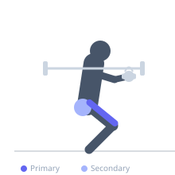
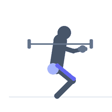

Exercise guide / Cyclist Squat — Heel-Elevated Narrow Stance
Cyclist Squat — Heel-Elevated Narrow Stance
The cyclist squat uses a narrow stance with significant heel elevation, achieved by placing the heels on plates or a wedge. This combination of foot positioning and heel elevation allows the knees to travel far forward, maximizing quadriceps recruitment while minimizing hip and glute involvement. The name reflects its popularity among cyclists and those seeking maximal quadriceps isolation.
Primary muscles
rectus femoris
vastus lateralis
vastus medialis
vastus intermedius
Secondary muscles
gluteus maximus
Stabilizers
erector spinae
transverse abdominis
Equipment
Weight Plates
Optional
Standard Barbell
Dumbbell (Fixed)


Starting position
- Stand with heels elevated 2-4 inches on weight plates or a squat wedge. Feet hip-width or narrower, toes pointing forward or slightly out. Hold a dumbbell or kettlebell at the chest for resistance, or use a barbell on the back.
Setup
- Position two weight plates flat on the floor for heel elevation. Ensure they are stable and will not shift. Begin with bodyweight or light load.
Steps
- Step 1: Stand tall, brace the core, and allow the knees to track forward over the toes.
- Step 2: Bend the knees and squat down, letting the knees travel well past the toes due to the heel elevation.
- Step 3: Descend until thighs are parallel or below, maintaining an upright torso.
- Step 4: Drive through the heels (which are elevated) to extend the knees and return to the starting position.
Coaching cues
- Knees forward over the toes
- Sit tall, don't lean
- Feel the quad stretch at the bottom
Breathing
- Inhale at the top, exhale on the drive up.
Range of motion
- Aim for thighs parallel or below. The heel elevation enables much greater depth for most people.
Tempo
- 3-1-1-0 (slow descent, brief pause at bottom, controlled ascent)
Common mistakes
- Heels not elevated enough to allow knee travel
- Allowing the torso to lean excessively forward
- Insufficient depth, reducing quad stretch
Safety
- High patellar tendon load — progress gradually if you have knee sensitivity
- Ensure heel elevation surface is stable
Training
- strength: 5–8 reps
- hypertrophy: 10–20 reps
- endurance: 20–30 reps
- strength: 3–4 sets
- hypertrophy: 3–4 sets
- endurance: 2–3 sets
- Rest: {'strength': 120, 'hypertrophy': 90, 'endurance': 45}